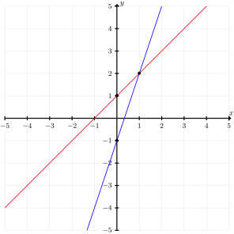
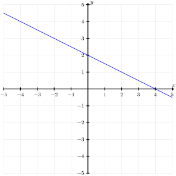
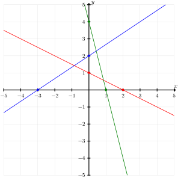

It is common to encounter situations involving multiple polynomials where we would like to find the points that are solutions to all of the polynomials at once. In the most general situation, we do not place any restrictions on the polynomials involved. This leads to a branch of mathematics called algebraic geometry 1
en.wikipedia.org/wiki/Algebraic_geometry
. The simplest case occurs when each of the polynomials involved is linear, and is known as linear algebra 2
en.wikipedia.org/wiki/Linear_algebra
. Both topics are well beyond the scope of this course, so we focus on finding solutions in two very special cases.
Subsection6.1.1Systems of Linear Equations in Two Variables
First we begin with a rigorous definition of a linear system.
Definition6.1.1.
A system of \(m\) linear equations in the variables \(x\) and \(y\) is a collection of \(m\) equations
A solution to the system is a point \((a,b)\) that is a solution for every equation in the system.
Solutions to system of equations have geometric meaning. Given a system of \(m\) linear equations in the variables \(x\) and \(y\text{,}\) each equation \(a_ix + b_iy = c_i\) represents a line in standard form. A solution to the linear system is a point that lies on each line — we call this a point of intersection
Example6.1.2.
Verify that \((1,2)\) is a solution to the system of two equations in \(x\) and \(y\)
\begin{align*}
y \amp= 3x - 1\\
y \amp= x + 1
\end{align*}
This tells us the first line passes through the points \((1,2)\) and \((0,-1)\text{,}\) and the second line passes through the points \((1,2)\) and \((0,1)\text{.}\) Plotting these lines, we can see that \((1,2)\) is the only point of intersection.

Figure6.1.4.The geometric interpretation of the solution to the system.
Subsection6.1.2Dependent Systems
A slightly stranger way for a linear system in the variables \(x\) and \(y\) to have a solution is when the lines are the same. In this case, there are infinitely many solutions.
Definition6.1.5.
We say a system of linear equations is dependent if there are infinitely many solutions to the system.
We can see in this form that they are the same line, so they intersect infinitely many times. Moreover, the points of intersection all have the form \((x, -1/2x + x).\)

Figure6.1.7.The solutions to the system
Subsection6.1.3Consistency
In general, a system is not guaranteed to have any solutions. The simplest way this can happen is if two lines in the system are parallel. However, if there are more than two lines, then the system may fail to have any solutions even if no two lines are parallel.
Definition6.1.8.
We say a linear system is consistent if there is at least one solution. Otherwise, we say the linear system is inconsistent.
Example6.1.9.
Verify geometrically that the system
\begin{align*}
-2x + 3y \amp= 6\\
x + 2y \amp= 2\\
4x + y \amp= 4
\end{align*}
does not have any solutions.
Solution.
A solution would correspond to a common point of intersection for all three lines. We graph each line by finding two points on each line
The line \(-2x + 3y = 6\) passes through the points \((0, 2)\) and \((-3,0)\)
The line \(x + 2y = 2\) passes through the points \((0,1)\) and \((2,0)\)
The line \(4x + y = 4\) passes through the points \((0, 4)\) and \((1,0)\)
When we plot the lines, we can see that each pair intersects, but there is no one point through which all three pass.

Figure6.1.10.The graph of three lines with no common point of intersection
Subsection6.1.4Characterizing Solutions
It is a surprising fact of linear algebra that this essentially characterizes the behavior of every linear system — regardless of the number of variables and equations. That is to say, there are three possible behaviors for a linear system:
The system is inconsistent (i.e. no solutions),
The system has exactly one solution, or
The system has infinitely many solutions.
Subsection6.1.5Finding Solutions Algebraically
The simplest way to find solutions to a linear system in two variables is to use a method called substitution The method relies on solving one equation in the system for a single variable of your choice and then substituting that into the other equations.
Example6.1.11.
Use substitution to solve the system
\begin{align*}
x + y \amp= 2\\
-x + y \amp= 0
\end{align*}
Solution.
The simplest equation to solve for one variable is the second. We simply add \(x\) to both sides of the equation to find \(y = x\text{.}\) When we substitute this into the other equation to obtain
\begin{equation*}
y + y = 2y = 2.
\end{equation*}
Divide both side by \(2\) to see that \(y = 1\text{.}\) Therefore the system has exactly one solution, \((1,1)\text{.}\)
Exercises6.1.6Exercises
For each system below, sketch a graph of the lines and determine whether the system is consistent or inconsistent. If the system is consistent, find all solutions. Express the solutions as a set and plot them.